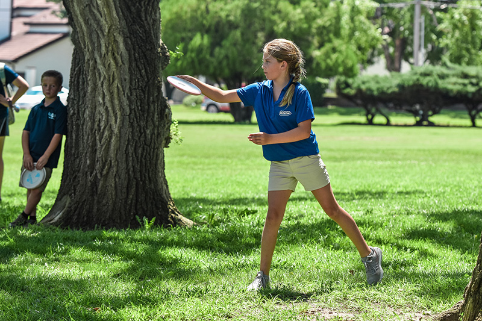
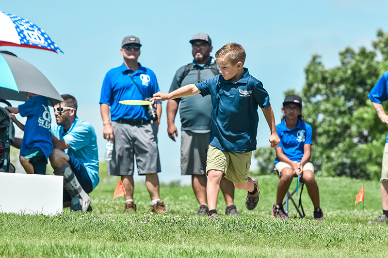

What Is Disc Golf?
Disc golf is played much like golf except, instead of a ball and clubs, players use a flying disc. The sport was formalized in the 1970s and shares with golf the object of completing each hole in the fewest strokes (or, in the case of disc golf, fewest throws).
A disc golf hole begins from a tee area and ends at a target, the most common of which is an elevated metal basket. As a player progresses down the fairway, he or she must make each consecutive throw from the spot where the previous throw landed. In group play, the farthest away player always throws first. Players should not get ahead of the away player. The trees, shrubs, and terrain changes located in and around the fairways provide challenging obstacles for the golfer. When the 'putt' lands in the basket, the hole is complete.
Disc golf shares the same joys and frustrations as golf, whether it's sinking a long putt or hitting a tree halfway down the fairway. Unlike golf, disc golf is usually free to play in public parks and takes about half as long to complete a round. Disc golf is designed to be enjoyed by people of all ages, gender identity, and economic status, making it a great lifetime fitness activity.
The Professional Disc Golf Association (PDGA) offers divisions of play from under eight to over eighty at the annual disc golf World Championships. The PDGA annually presents four separate world championship: Professional, Professional Masters, Amateur and Juniors.
It is been estimated that 8 to 12 million Americans have played disc golf and that over half a million play regularly. The majority of these players participate at the amateur and recreational level. The Professional Disc Golf Association is the governing body of disc golf and oversees both amateur events and a professional tour that sustains a growing field of full-time players. The PDGA annually sanctions over 3,500 events and has an active membership base of more than 80,000 competitive disc golfers from 47 nations around the world.